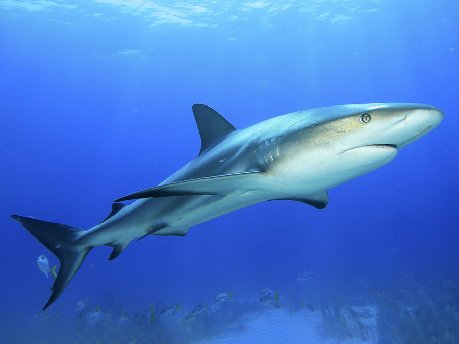
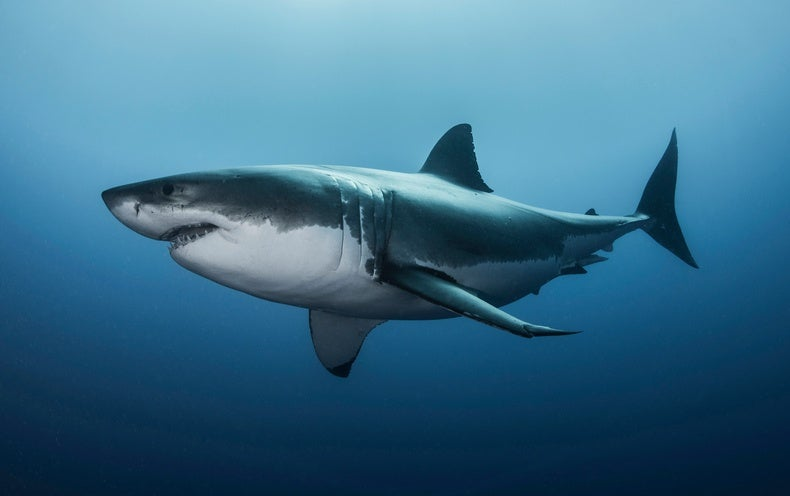
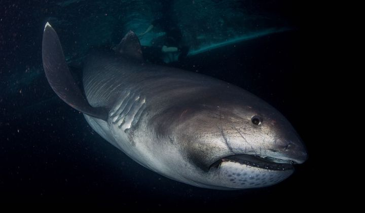
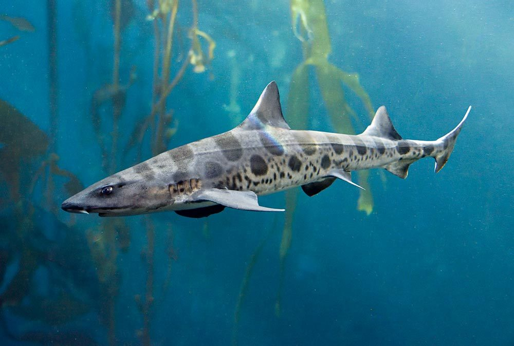
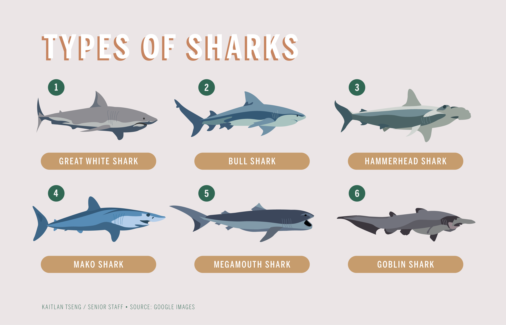

Sharks are renowned for their wound healing, lifespans of 70-odd years, and low rates of cancer. Their genes could reveal their superpowers.
A white shark near isolated, volcanic Isla Guadalupe in Mexico.
Blue shark, Credit: Rodrigo Friscione Getty Images.

Sharks are renowned for their wound healing, lifespans of 70-odd years, and low rates of cancer. Their genes could reveal their superpowers.

The hammerhead sharks are a group of sharks that form the family Sphyrnidae.

Shortfin mako shark (Isurus oxyrinchus), found throughout tropical and temperate seas worldwide. Richard Robinson—Cultura/age fotostock.
very rare the megamouth shark, no one knows how many live in the wild.
Leopard sharks have a third eyelid called a “nictitating membrane.”
